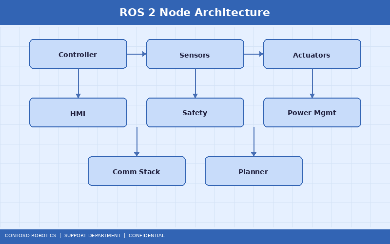
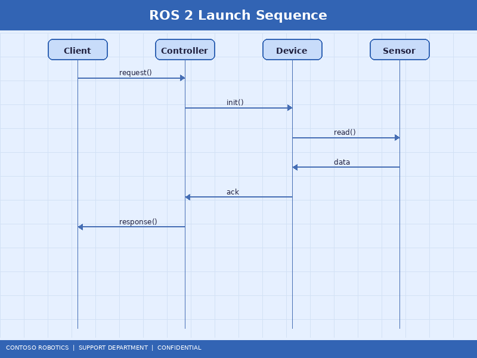
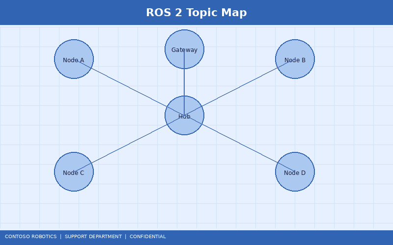

The CoBot ROS 2 Bridge enables seamless integration of the CoBot Pro 500 and CoBot Pro 700 with the Robot Operating System 2 (ROS 2) ecosystem. This guide covers bridge setup, topic publishing, service calls, action servers, MoveIt 2 integration, and TF2 frame configuration. For the full ROS 2 node API reference, including all message types and parameter descriptions, refer to the ROS 2 Node Reference in the Engineering documentation.
sudo apt install ros-humble-cobot-pro-bridgesudo apt install ros-humble-moveit
The CoBot ROS 2 Bridge is a single ROS 2 node (cobot_bridge_node) that communicates with the CoBot Pro via OPC-UA (port 4840) and exposes the robot's state and control interfaces as standard ROS 2 primitives:
The bridge is launched using a ROS 2 launch file that configures the connection parameters:
ros2 launch cobot_pro_bridge cobot_bridge.launch.py \
robot_ip:=192.168.1.100 \
robot_model:=cobot_pro_500 \
publish_rate:=125.0 \
use_sim_time:=false

Launch parameters:
| Parameter | Default | Description |
|---|---|---|
robot_ip |
192.168.1.100 | IP address of the CoBot Pro control cabinet LAN port |
robot_model |
cobot_pro_500 | Robot model: cobot_pro_500 or cobot_pro_700 |
publish_rate |
125.0 | Joint state publish rate in Hz (max 500 Hz) |
use_sim_time |
false | Set to true for Gazebo simulation |
safety_check |
true | Enable SC-100 safety status monitoring via the bridge |

| Topic | Message Type | Rate | Description |
|---|---|---|---|
/cobot/joint_states |
sensor_msgs/JointState |
125 Hz | Joint positions (rad), velocities (rad/s), efforts (Nm) |
/cobot/tcp_pose |
geometry_msgs/PoseStamped |
125 Hz | Tool center point pose in the base frame |
/cobot/ft_sensor |
geometry_msgs/WrenchStamped |
500 Hz | Force (N) and torque (Nm) at the tool flange |
/cobot/safety_status |
cobot_msgs/SafetyStatus |
10 Hz | SC-100 mode, active zone, speed/force limits |
/cobot/io_state |
cobot_msgs/IOState |
50 Hz | Digital and analog I/O values |
# Set payload (mass in kg, center of gravity in meters)
ros2 service call /cobot/set_payload cobot_msgs/srv/SetPayload \
"{mass: 2.5, cog: {x: 0.0, y: 0.0, z: 0.05}}"
# Enable freedrive mode
ros2 service call /cobot/set_freedrive std_srvs/srv/SetBool "{data: true}"
# Set digital output DO1 to HIGH
ros2 service call /cobot/set_digital_output cobot_msgs/srv/SetDigitalOutput \
"{pin: 1, value: true}"
The bridge provides action servers for long-running motion commands with feedback and cancellation support:
# Move to a joint position (radians)
ros2 action send_goal /cobot/move_joints cobot_msgs/action/MoveJoints \
"{target: [0.0, -1.57, 1.57, 0.0, 1.57, 0.0], velocity: 0.5, acceleration: 0.3}"
# Move TCP to a Cartesian pose
ros2 action send_goal /cobot/move_tcp cobot_msgs/action/MoveTCP \
"{target: {position: {x: 0.4, y: 0.0, z: 0.3}, orientation: {x: 0.0, y: 1.0, z: 0.0, w: 0.0}}, velocity: 0.1}"
Action feedback includes the current joint positions and percentage complete. Cancel a running action with ros2 action cancel_goal.
The CoBot ROS 2 Bridge includes a MoveIt 2 configuration package for motion planning:
ros2 launch cobot_pro_moveit_config moveit.launch.py robot_model:=cobot_pro_500/cobot/execute_trajectory action server./planning_scene using moveit_msgs/CollisionObject.The bridge publishes the following TF2 frames at 125 Hz:
cobot_base_link → cobot_link_1 → ... → cobot_link_6 → cobot_tool0cobot_base_link → cobot_tcp (includes the configured tool offset)cobot_base_link → cobot_vm200 (if the Vision Module VM-200 is calibrated)To add a custom frame (e.g., a fixture or conveyor reference), use the /cobot/set_user_frame service or define it in the launch file YAML configuration.
The CoBot ROS 2 Bridge operates over OPC-UA, which is a non-real-time protocol. For applications requiring deterministic communication (cycle time <1 ms), interface directly with the CoBot Pro's EtherCAT bus. Refer to the EtherCAT Communication Stack in the Engineering documentation for details on the real-time communication architecture and direct servo access via EtherCAT.
OPC-UA bridge latency characteristics:
Document version 4.2.0 | Last updated: 2025-01-15 | Contoso Robotics Technical Support